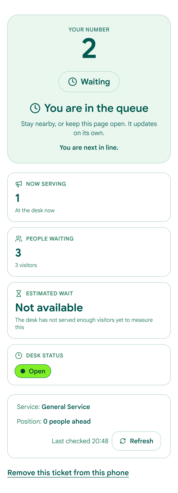
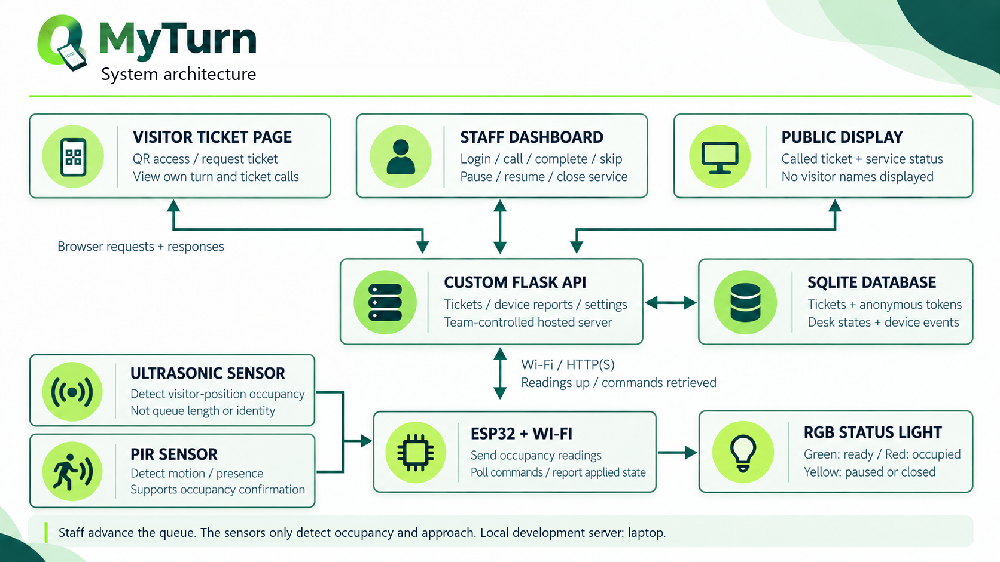
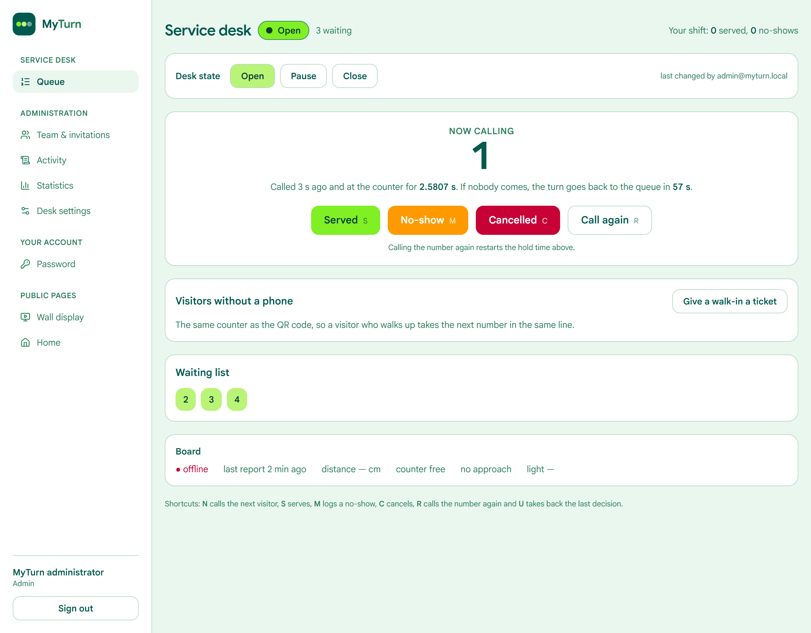
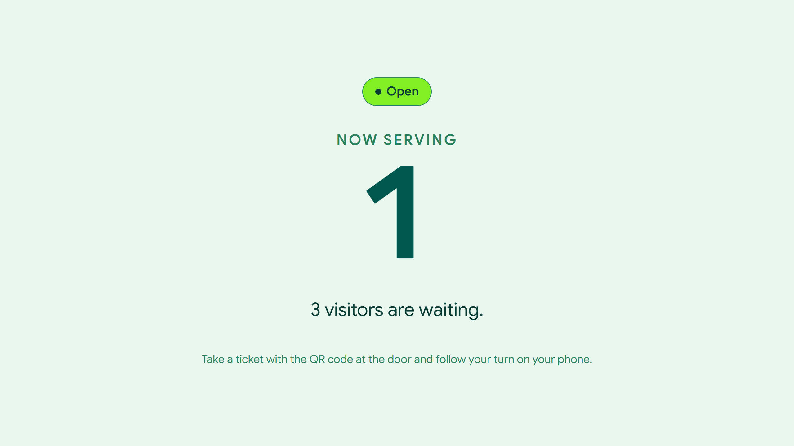

INES-RUHENGERI · Faculty of Sciences and Information Technology
Design and Implementation of an IoT-Based Queue Management and Service-Desk Status System
Your Turn, Made Simple.
A visitor cannot tell how long the wait is, so they crowd the counter, leave, or come back at the wrong moment.
The desk calls a number that is not there. Without a rule that recovers, everyone behind it waits.
A paper list cannot say how long service takes, how many visitors never answered, or who changed the desk.
The QR code at the door opens the ticket page. No app, no account.
The server issues the next number and a private tracking link.
The page shows the called number, the wait and how many are ahead.
The display and the phone update together, without a refresh.

The visitor page, built and running
An ESP32 reads distance and approach, then applies the desk state to an RGB LED.
Flask owns the queue rules, the counter, the accounts and the event log.
Queue, desk, board and accounts in one file, with every change written down.
Next.js: visitor, wall display, staff console and administration.
The browser reaches the API through the same origin; the board proves itself with a device key.

ESP32 → Flask API → SQLite → Next.js
The enclosure, the sensor mount and the power supply are part of the same budget.
Wiring at a glance · the full schematic is in the report
A counter row is updated in the same transaction that inserts the ticket, so two requests cannot share a number.
The tracking URL carries a random token, never the ticket number or a sequential id.
One call at a time, enforced by a unique index and a transaction.
After the hold, an unanswered number goes to the back with a fresh number.
Every change is an event with a time and an actor: a person, or the system.
A ticket's life
recall restarts the hold; undo takes back the last decision within 10 seconds. The default hold is 60 seconds, and the next slide shows the one case where the board can shorten it.
Without a fresh reading, the full hold always applies.
The unused part of the hold is given back to the queue.
The server decides. The board only reports. An offline board, a missing reading, an occupied counter or an approach keeps the full hold, so absence of data is never treated as absence of a person.
Why a floor? A visitor who is walking in needs time to reach the desk. Ten seconds of grace, then a floor of 25, stops the rule from firing before they arrive.
MYTURN_ETA_MIN_SAMPLES, not a guess
Each sample is the time from called_at to closed_at of a ticket that was actually served.
The visitor sees the average and how many tickets it came from, so a thin average cannot look certain.
A desk that serves in seconds reports seconds. The figure is not hidden to look better.
If the desk sets a target, the statistics page reports how often it was actually met.

Staff: call, complete, skip, cancel, walk-in, recall and undo.
Live: hold countdown, average service time, keyboard shortcuts.
Invite, promote, switch off; the last administrator cannot be removed.
Ticket, desk and account history in one list, with the reason for each requeue.
Counts, service-time distribution, busiest hours, target comparison and CSV.
Name, description and target time change while the server runs.
Every change is written to the activity log with the actor and the time.
Visitor
An opaque ticket token in the link. No name, phone number or email is ever requested.
Staff
Single-use, 72 hours. Sign in as a person, or with the shared classroom password.
Administrator
Created only by the seed script or by another administrator. Never by public registration.
Device
The ESP32 sends a key with every reading. It can report and ask for a setting; it cannot change the queue.
Server-side roles. Every admin route is checked twice: the page, and the API.
CSRF on writes. A double-submit token, kept in memory, not in localStorage.
Invitations cannot create admins. Asking for one is a 400.
Guarded last admin. You cannot demote the final administrator or switch off your own account.
No address leaks. A password reset answers the same whether or not the address exists.
Recorded. Account changes land in the activity history with the actor and the time.
The number comes from the server; the tracker opens.
Call next at the desk; the wall screen and the phone update together.
Complete, skip or cancel. Undo is available for ten seconds.
The ticket goes to the back with a fresh number, and the reason is logged.
Distance and approach change the LED; the dashboard shows what the board applied.
The ticket page says so before a visitor joins, and the LED follows.

The waiting-area display
Every check was run against the running prototype, not read off the source.
TypeScript, ESLint and the production build all pass; all fourteen pages are generated.
Auth and CSRF, the occupancy requeue with synthetic readings, the estimate gate, undo, recall, CSV.
The physical sensor trials and the photograph of the desk rig are the remaining figures; the report leaves them blank rather than inventing them.
The schema and the console assume a single desk. A second service needs a desk column and a per-desk call index.
Current scopeA called ticket is treated as being served; the dwell time is the service time. This is documented, not invented.
DeliberateThe PIR can see a passer-by, and the ultrasonic sensor needs a clean mount. Field accuracy is still to be recorded.
To measureAn offline board keeps the fixed 60-second hold. Readings are not buffered on the ESP32 during a Wi-Fi drop.
Designed, not builtInvitation and reset links are shown in the app and logged in development, not emailed. A production deployment needs SMTP.
PrototypeSSE subscribers and rate-limit counters live in memory, so the API runs one worker. Scaling needs shared state.
DeploymentAlso not built: daily number reset, multi-desk routing, spoken announcements and a forecast. They are specified in the feature catalogue with their milestones.
Delivered
Next
1. Run and record the physical sensor trials; add the desk photograph.
2. Fill the measured figures into the report, without estimating them.
3. Buffer readings on the board when the Wi-Fi drops.
4. Add a second desk and daily number resets.
5. Speak the number and show notices on the display.
A working prototype, a tested queue, and a clear list of what still needs measuring.